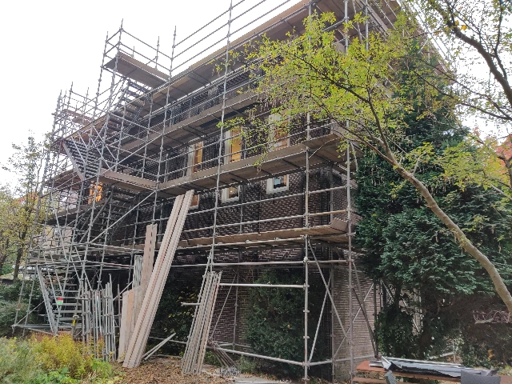
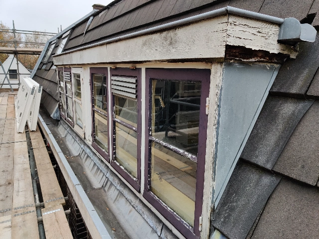
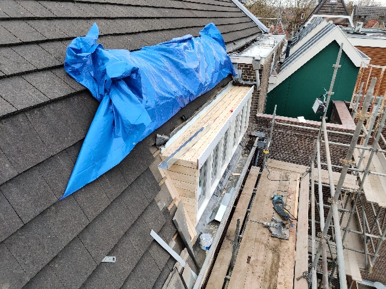
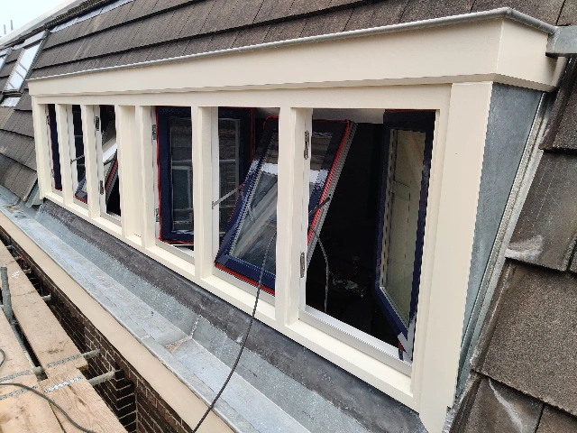
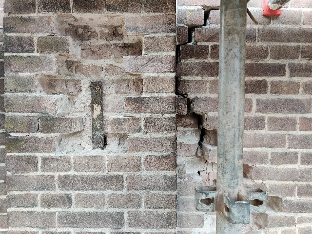
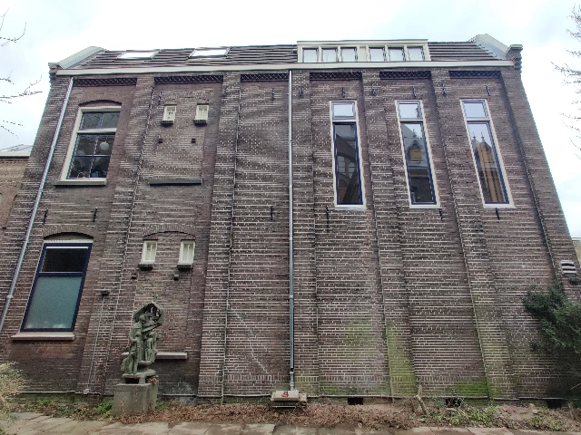

Foto's
Renovatie exterieur
De renovatie van het exterieur hebben wij uitbesteed. Het was hoognodig toe aan een grote onderhoudsbeurt.

Het opbouwen van de immense steiger kostte alleen al bijna twee weken.

De staat van de dakkapellen. Ook Monumentenwacht was van mening dat deze niet meer te redden waren.

Na flink wat discussiëren en aandringen mocht er uiteindelijk dubbel glas in de nieuwe dakkapellen. Verder moest alles zoveel mogelijk de bestaande
situatie benaderen.

We hebben ervoor gekozen om de kleurstelling van de rest van het huis ook toe te passen op de nieuwe dakkapellen.

Over de gehele gevel zijn bakstenen vervangen en scheuren opgevuld.

Het eindresultaat na drie maanden hard werken.